Panduan komprehensif merancang postingan carousel editorial bersambung, manajemen folder proyek klien, kolaborasi ruang kerja tim, dan ekspor multi-format kualitas Ultra-HD.
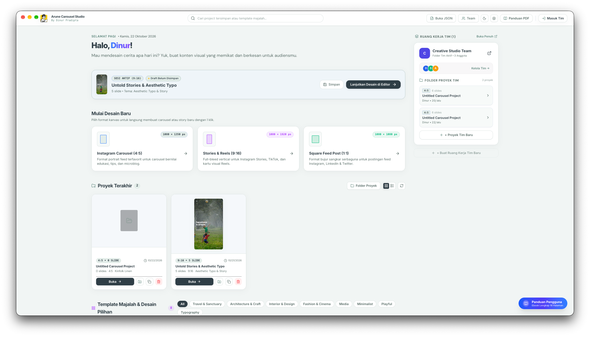
Pintu gerbang utama untuk memulai desain baru dalam rasio standar industri atau melanjutkan proyek terakhir Anda.
Pilih Instagram Carousel 4:5 (1080×1350px), Stories & Reels 9:16 (1080×1920px), atau Square 1:1 (1080×1080px).
Akses langsung ke seluruh folder kerja melalui tombol ikon map Project Folders di samping toggle tata letak Grid/List.
Tombol melayang "Panduan Pengguna (PDF)" di sudut kanan bawah selalu siap membuka kembali buku panduan ini kapan saja.
Ctrl + N untuk membuka dokumen kanvas baru secara instan dari halaman manapun.
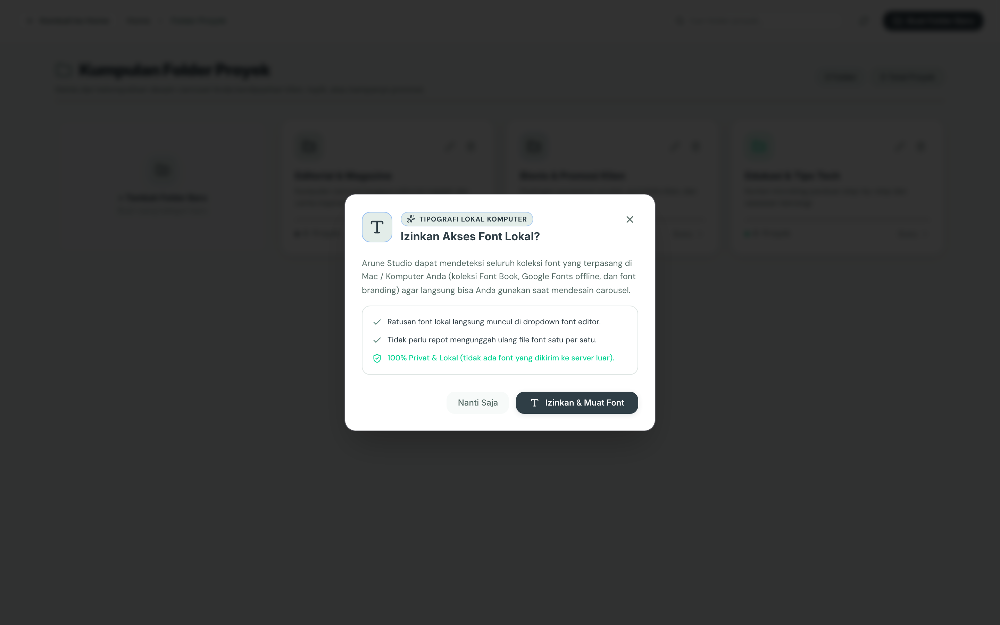
Kelola dan kelompokkan puluhan hingga ratusan carousel berdasarkan nama klien, brand, atau bulan kampanye secara rapi.
Klik tombol "+ Folder Baru" di kanan atas. Masukkan nama folder, pilih warna aksen (Amber, Blue, Emerald, Purple), lalu simpan.
Klik ikon 📁+ pada kartu proyek di Home atau Editor untuk memasukkan desain ke dalam folder kerja yang sesuai.
Proyek yang belum dikelompokkan otomatis berada di direktori "Semua Proyek (Unassigned)" agar tidak pernah hilang.
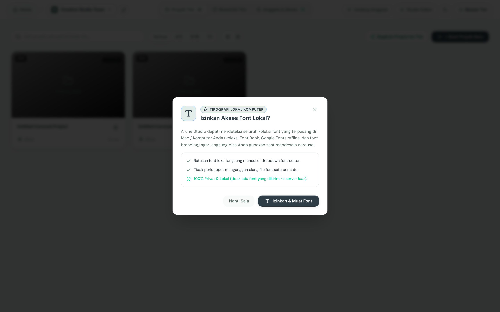
Bekerja bersama dalam satu ruang kerja tersentralisasi dengan sinkronisasi database cloud dan riwayat versi snapshot.
Pindah ruang kerja antar klien/organisasi dengan satu klik pada menu dropdown tim di sudut kiri atas.
Kartu proyek tim disusun bertumpuk vertikal memperlihatkan cover, rasio aspek, jumlah slide, nama pembuat, dan tombol aksi.
Gunakan tombol "+ Undang Anggota" untuk menambahkan rekan kerja melalui tautan atau email undangan.
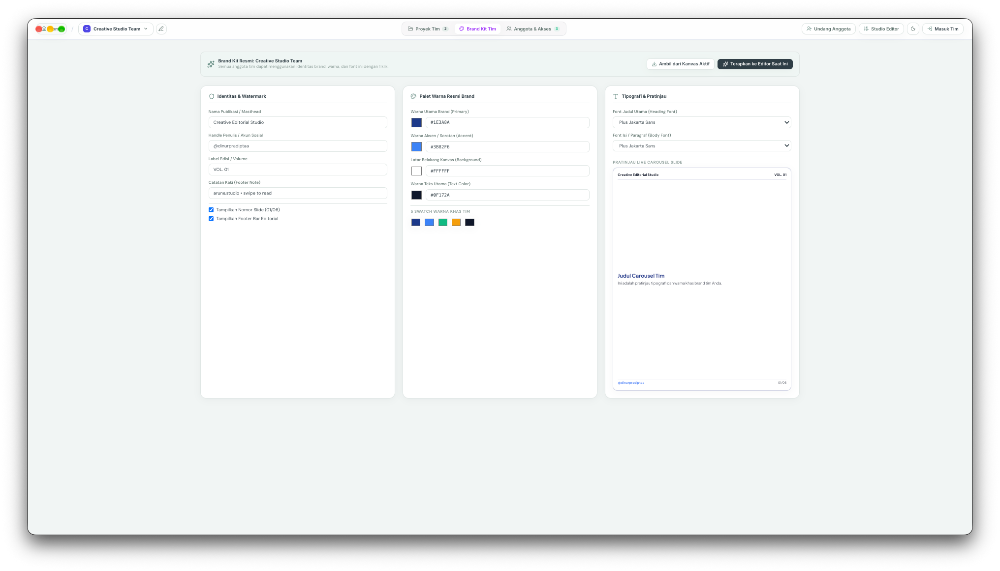
Kunci palet warna, tipografi korporat, dan logo resmi agar setiap anggota tim selalu merancang sesuai standar brand.
Tentukan warna primer, sekunder, aksen, dan canvas background. Warna ini otomatis muncul di Color Picker setiap anggota tim.
Tetapkan font judul (Display/Heading) dan font paragraf (Body Copy) baku untuk menjaga kredibilitas visual.
Unggah logo PNG/SVG transparan dan tetapkan username media sosial tim (misal: @mindora.studio) sebagai default watermark.
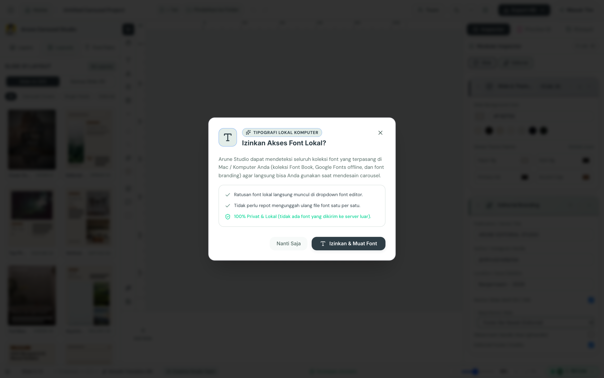
Dirancang dengan arsitektur 3 kolom intuitif: Sidebar Katalog di kiri, Kanvas di tengah, dan Inspector Styling di kanan.
Kontrol judul proyek, indikator Auto-Save Vault, Undo/Redo, Zoom dropdown (Fit), tombol Preview Smartphone, dan Ekspor.
Area kanvas beresolusi tajam dilengkapi garis bantu snapping merah dan nomor folio slide otomatis (misal: 01/06).
Bilah thumbnail bawah untuk berpindah antar slide, menambah slide baru (+), menduplikasi, atau menyeret untuk merubah urutan.
Ctrl + Scroll untuk zoom in/out, atau tahan Spasi untuk menggeser kanvas bebas.
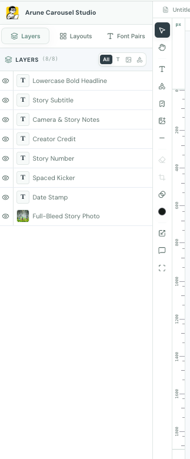
Kontrol penuh susunan hierarki elemen pada slide aktif, mempermudah pemilihan objek yang bertumpuk rumit.
Filter layer berdasarkan jenis: Semua, Teks, Gambar, atau Bentuk (Shapes) untuk menemukan elemen dalam sekejap.
Kunci layer latar belakang dengan ikon gembok agar tidak tergeser. Sembunyikan elemen sementara dengan ikon mata.
Tombol instan: Bawa ke Paling Depan, Kirim ke Paling Belakang, Naikkan 1 Tingkat, dan Turunkan 1 Tingkat.
Koleksi pasangan jenis huruf terkurasi dari standar publikasi majalah internasional, siap diterapkan dalam satu klik.
Kombinasi Playfair Display (Judul) + Plus Jakarta Sans (Body). Sangat anggun untuk lifestyle, arsitektur, dan opini.
Kombinasi Inter Black + Inter Regular. Bersih, modern, dan berkontras tinggi untuk tips bisnis dan edukasi data.
Klik tombol "Deteksi Font Komputer Lokal" untuk memindai seluruh font yang terpasang di sistem operasi komputer Anda.
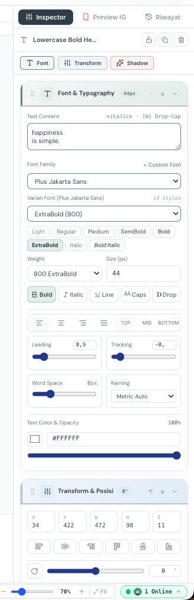
Panel kendali dinamis saat elemen dipilih di kanvas, menyediakan parameter presisi tipografi, warna, dan efek bayangan.
Atur tracking spasi huruf (misal: +0.1em untuk huruf kapital) dan leading tinggi baris untuk keterbacaan prima.
Pilih warna HEX atau kurangi opacity (70%-85%) untuk subjudul guna menciptakan hierarki baca bertingkat.
Tambahkan bayangan lembut di belakang teks agar tetap kontras dan terbaca jelas ketika diletakkan di atas foto terang.
Ctrl + D untuk menggandakan elemen terpilih dengan seluruh gaya gayanya.
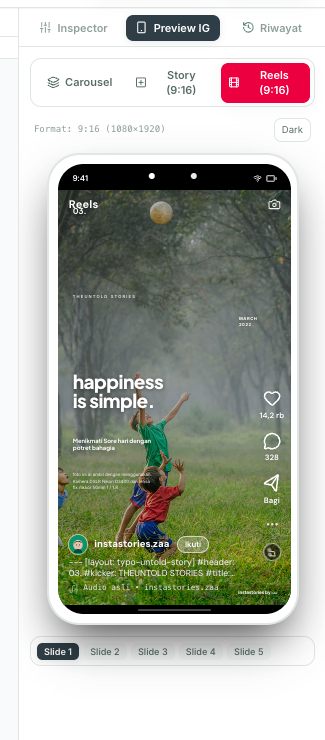
Simulasikan pengalaman pengguna di smartphone nyata sebelum menerbitkan konten ke feed media sosial.
Seret mouse ke kiri/kanan untuk memeriksa apakah transisi antar-slide bersambung mulus tanpa ada elemen yang terpotong.
Lengkap dengan avatar profil, nama akun (@mindora.studio), tombol Like, Komentar, Share, dan pagination dots.
Aktifkan toggle "Seamless Mode" di bilah atas untuk menguji kecocokan foto panorama yang membentang lintas slide.
Panah Kiri / Panah Kanan pada keyboard, atau Esc untuk menutup.
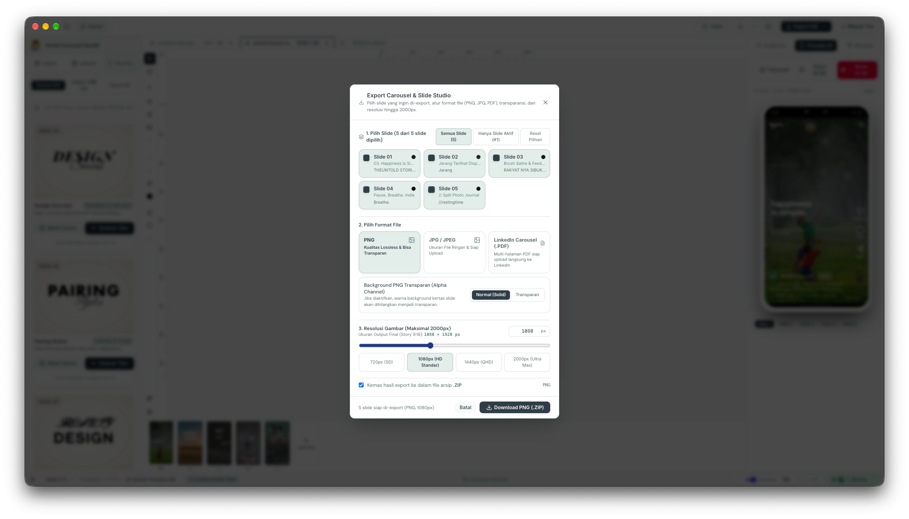
Mesin perender grafis berkecepatan tinggi yang mengonversi seluruh slide kanvas menjadi berkas siap publikasi.
Kualitas grafis tertinggi tanpa kompresi buram, mempertahankan ketajaman garis dan teks saat diunggah ke Instagram.
Menggabungkan seluruh slide ke dalam satu dokumen PDF vertikal/horizontal siap unggah ke LinkedIn Carousel.
Mengemas seluruh slide (Slide_01 s/d Slide_08) ke dalam satu file ZIP dengan penomoran rapi dalam 1 detik.
Ctrl + E untuk membuka modal ekspor secara instan dari kanvas editor.
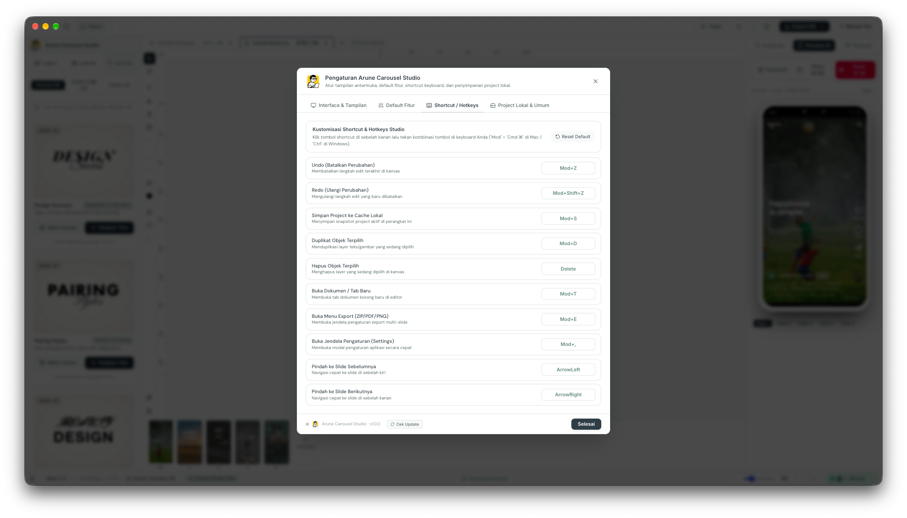
Kuasai tombol pintas esensial atau rekam kombinasi tombol baru untuk mempercepat alur kerja hingga 3x lipat.
Ctrl + S Simpan ke Vault • Ctrl + Z Undo • Ctrl + Shift + Z Redo • Ctrl + E Ekspor.
Ctrl + D Duplikasi • Backspace / Del Hapus • Panah Pindah Slide Kiri/Kanan.
Klik tombol rekam di samping hotkey lalu tekan kombinasi tombol baru yang paling nyaman bagi tangan Anda.
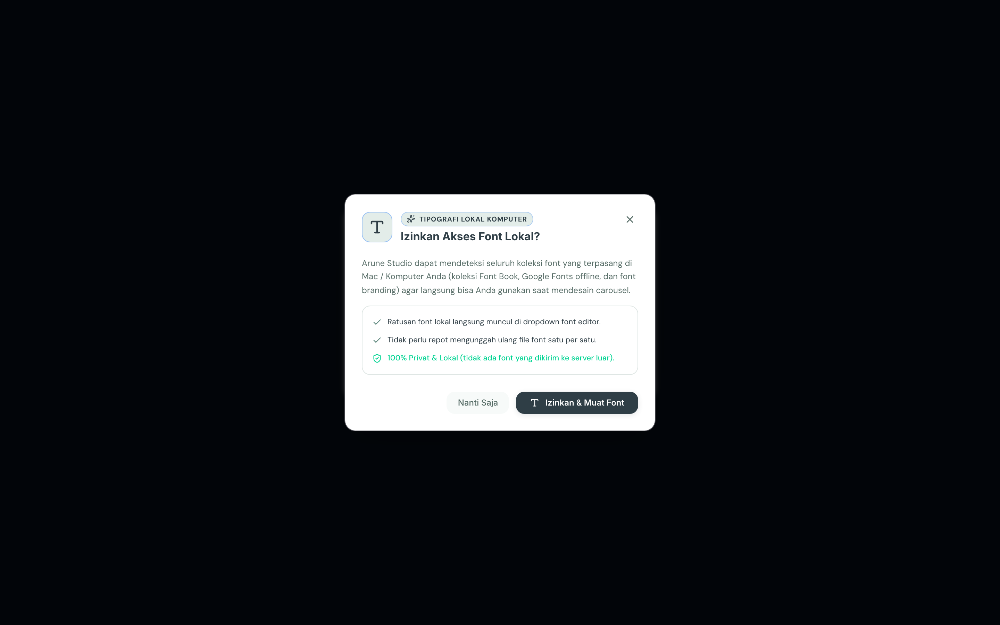
Ciptakan palet warna khas yang mencerminkan tone of voice publikasi Anda dengan live preview kanvas interaktif.
Tentukan warna dasar panggung kanvas, mulai dari Linen krem hangat hingga Dark Slate elegan.
Harmonisasikan warna teks judul kontras tinggi dan warna teks deskripsi yang nyaman di mata pembaca.
Perubahan warna langsung terlihat pada sampel slide di sisi kanan secara real-time sebelum disimpan ke koleksi favorit.
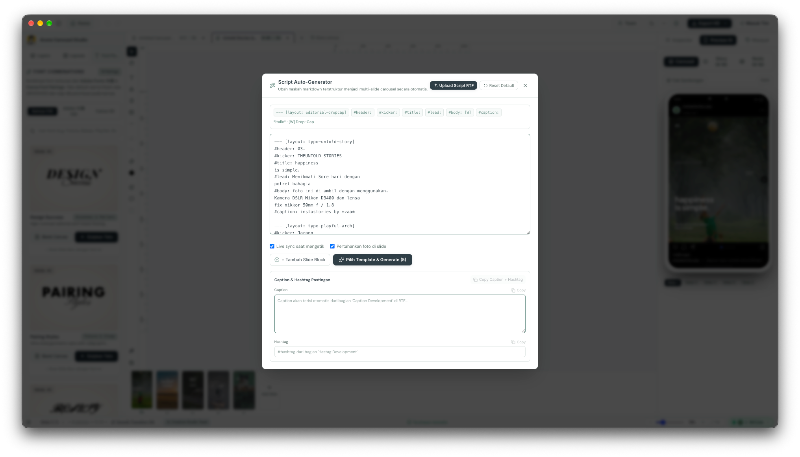
Tulis naskah dalam format Markdown sederhana dan biarkan sistem menyusun seluruh slide kanvas secara otomatis.
---Tiga tanda strip horizontal otomatis menciptakan slide baru dalam urutan carousel Anda.
# & Subtitle ##Tanda pagar otomatis menjadi teks judul utama berukuran besar dan subjudul kategori.
Klik tombol "Generate Slides" untuk mengonversi seluruh naskah panjang menjadi layout editorial siap pakai.
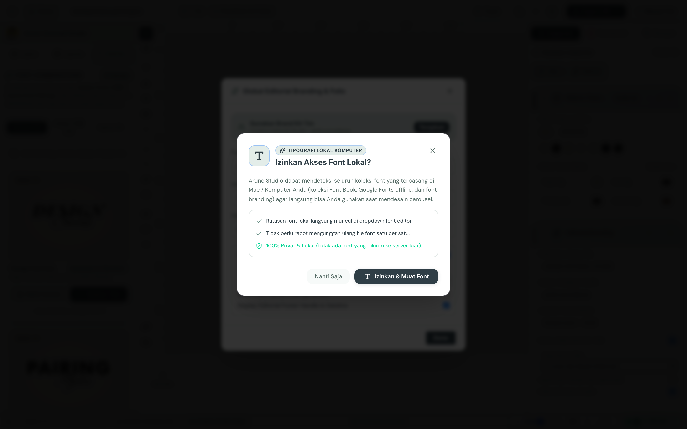
Terapkan watermark identitas publikasi dan handle akun Instagram Anda di seluruh slide secara otomatis.
Masukkan nama majalah (misal: "Arunika Editorial") dan handle Instagram (@arunika.id) untuk perlindungan hak cipta.
Tentukan letak watermark: Kiri Atas, Kanan Atas, Kiri Bawah, Kanan Bawah, atau Tengah Bawah.
Pilih apakah watermark tampil di slide sampul (Cover), seluruh slide isi, atau hanya slide Call to Action akhir.
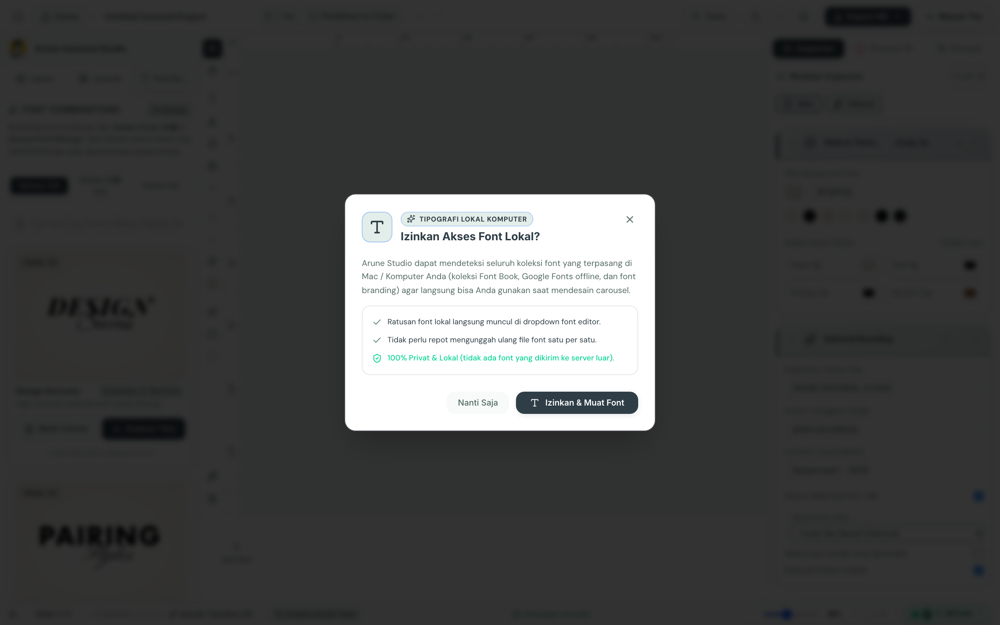
Kirim dokumen desain lokal Anda ke ruang kerja tim di cloud dalam satu klik agar dapat disunting bersama rekan kerja.
Pilih nama tim target dari menu dropdown serta tentukan hak akses (Editor untuk menyunting atau Viewer untuk meninjau).
Sematkan pesan singkat atau arahan revisi untuk rekan tim Anda sebelum dokumen disinkronkan ke cloud.
Setiap dokumen yang dibagikan otomatis dibuatkan checkpoint snapshot timeline agar versi sebelumnya dapat dipulihkan sewaktu-waktu.
@username telah tertera di pojok slide secara rapi?Pedoman baku editorial untuk menjamin setiap postingan yang dipublikasikan memiliki nilai konversi dan daya pikat visual tinggi.
Slide 1: Hook kuat dengan tipografi berbobot besar.
Slide 2-3: Penjabaran masalah dan data pemantik empati.
Slide 4-6: Solusi bertahap, kutipan, dan visual pendukung.
Slide Akhir: Call-to-Action (CTA) ajakan simpan & bagikan.
Arune Carousel Studio berjalan lancar secara offline tanpa lag peramban, sekaligus siap tersinkronisasi instan saat terhubung ke jaringan tim.